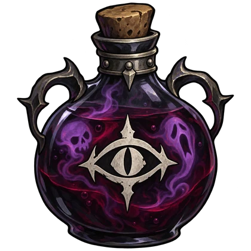

The Architect proposes your next card and your initial Ancient gift. Their choice becomes yours after eight seconds.
Don’t like the offer? You have one override per act. Use it to pause the countdown and choose a replacement. Make it count.
The override is shared across eligible choices.
10/30
A deck of your making
Pick ten of thirty cards before the climb begins. Your opening strategy belongs to you.
3 choices
More say in your relics
Random relic rewards and shop relic purchases offer three linked options. Treasure chests keep the game’s native selection.
1 nemesis
A boss with your name on it
After the central chest, the Architect chooses the act boss. No override. At Ascension 10, they choose the ordered final boss pair—even duplicates.
Set your own stakes. Toggle Ancient overrides, Architect first-act selection, and elite selection in the lobby. Ancient overrides and first-act selection start off.
Continue the rivalry. Native checkpoints restore battle starts and post-combat rewards with your roles and mod resources intact.
THE ARCHITECT’S ARSENAL
A little bottled bad fortune.
Eight ways to complicate the climb. Four public slots. One potion per turn, in a ten-second window before the Champion can act.

DECK SABOTAGE
Bottled Spite
Some gifts keep on giving.
Shuffle 2 random Curses into the Champion’s draw pile for this combat.
Chest openings and Champion overrides earn the Architect a choice of three potions. Rack full? Replace one, or discard the new arrival.
Select a bottle to inspect its effect.
FROM INSIDE THE SPIRE
See the trial unfold.
Real in-game captures. Click any screenshot for a closer look.
Captured in local development sessions, September 16, 2026. GIFs cycle through screenshots; they are not video recordings. Some examples show earlier UI states and QA-only review controls.
YOUR NEXT RUN NEEDS A RIVAL
Who’s climbing? Who’s plotting?
The Architect’s Trial is currently a private playtest for Windows. Bring the same game, BaseLib, and mod build on both computers.
MOD 0.1.1-private.4GAME 0.111.0BASELIB 3.4.7
01
Gather your tools
Install Slay the Spire 2 and BaseLib 3.4.7 ↗. Get the matching playtest ZIP from your playtest organizer.
02
Prepare the trial
With the game closed, place the ZIP’s SaboteurMode folder in the game’s mods folder, alongside BaseLib.
03
Choose your sides
Host a multiplayer Custom run. Enable The Architect’s Trial, assign the Champion, choose your options, and both press Ready.
Local two-client checks cover both host roles, battle and reward checkpoints, overrides, and the Act 1–2 transition. Steam multiplayer between separate computers has not yet been verified. Full-run balance, other mods, controller navigation, and non-Windows platforms need further testing.
To resume, use the original host’s Host from Save entry with the same participants and matching builds. An unfinished fight restarts from its beginning; post-combat rewards regenerate. A disconnect suspends the match.
{kind=link}
{kind=link}
{kind=link}
{kind=link}
{kind=link}